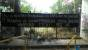
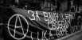
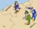

Kommende VeranstaltungenKeine kommenden Veranstaltungen veröffentlicht
|
argentina/uruguay/paraguay / género Dienstag Januar 05, 2021 23:06 bei FAR – OAC – OAT

La marea verde que hace años no para de crecer en Argentina y en América Latina ayer pudo celebrar la aprobación de la Ley de Interrupción Voluntaria del Embarazo. Se trata de una reivindicación muy sentida para todas las mujeres y cuerpos gestantes de nuestra clase, ya que somos las más pobres quienes abortamos en las peores condiciones de clandestinidad, arriesgando nuestros cuerpos a los graves problemas de salud, a la cárcel y a la muerte. Esta lucha histórica tiene luz verde para que la fuerza de las de abajo en todo el continente avance en los derechos fundamentales para vivir, y no solo para sobrevivir como lo impone la maquinaria del capitalismo y su voracidad destructiva. Éste 30 de diciembre a la madrugada finalmente el Senado argentino tuvo que dar la aprobación definitiva a la ley de la Interrupción Voluntaria del Embarazo luego de años de presión social ejercida por el movimiento feminista, partidos políticos, sindicatos, organizaciones sociales y estudiantiles; Así como por el conjunto de mujeres y cuerpos gestantes, en las calles, en los históricos Encuentros Nacionales de Mujeres, hoy Plurinacionales de mujeres, lesbianas, trans, travestis y no binaries, como en cada espacio de trabajo, en cada lugar de estudio, en cada territorio, dando el debate y la pelea por la autonomía de nuestros cuerpos y nuestro derecho a decidir.[Português]
yunanistan / türkiye / kıbrıs / miscellaneous Sonntag Dezember 20, 2020 21:16 bei Devrimci Anarşist Faaliyet

İktidar Covid19 önlemleri adı altında ucu açık ve anlaşılmaz yasaklar açıkladı. Salgın süreci boyunca göstermelik önlemleri uygulayan iktidar gerçekçi önlemleri uygulamadı. Önlemleri fakir ve zengin yaşamını ayrıştırarak uyguladı. Bu ayrıştırma sadece ekonomik değildi, tarafı olduğu kültürel kesimleri kayırmasıyla sosyal bir ayrıştırmaya da dönüştü. Başkanın açıkladığı son salgın yasaklarında da bu açıkça ortadadır. Atölyelerde, fabrikalarda, inşaatlarda işçiler çalışıyorken patronlar izolasyonlarını sürdürmekteler. Kahvehaneler ve kıraathaneler kapanıyorken AVM’ler açık kalıyor, dip dibe yapılan ibadetler sürüyor. Bunlar bize, yapılan bu ayrıştırmayı apaçık göstermektedir. Bu yasakların Covid19 ile alakası yoktur. Yasaklar, krizle karşı karşıya kalan toplumun kontrolünü sağlamak ve krizi anlaşılamaz, algılanamaz kılarak saklama çabasının bir ürünüdür. [English]
bolivia / peru / ecuador / chile / represión / presos Samstag Dezember 12, 2020 00:21 bei Vários organizaciones anarquistas
“La prisión no impide que los actos antisociales se produzcan; por el contrario, aumenta su número. No mejora a los que van a parar a ella. Refórmesela tanto como se quiera, siempre será una privación de libertad, un medio ficticio como el convento, que torna al prisionero cada vez menos propio para la vida en sociedad. No consigue lo que se propone. Mancha a la sociedad. Debe desaparecer” (Piort Kropotkin – “Las Prisiones”) “Que los compañerxs no se sientan solxs. La gente con la que compartieron alegrías y tristezas, fracasos y victorias, están más que nunca junto a ellxs. Peleando con terco fervor. Sintiendo cada día más amor y más odio. Ese amor y ese odio con el que, juntxs, haremos cambiar el mundo de bases” (Juan C. Mechoso – Acción Directa Anarquista: Una Historia de FAU”) [Français] [Deutsche] [Ελληνικά] [Italiano] [English] [Català] [Português]
bolivia / peru / ecuador / chile / miscellaneous Dienstag November 24, 2020 03:21 bei Franz Verne

Es claro que esta siempre fue una disputa interburguesa, entre dos facciones de derecha, cada cual representando sus propios intereses y agendas políticas. Y en esta contienda perdió el que tuvo menos respaldo estratégico. La caída de Vizcarra demuestra un Ejecutivo debilitado y carente de gobernabilidad, pues —entre otras cosas— nunca tuvo una bancada parlamentaria que lo respalde y frene las arremetidas del Legislativo que sí logró consensuar su ataque en bloque bajo la desgastada argucia de la «lucha anticorrupción», cuando siempre estuvo claro que en ambos poderes del Estado el nivel de putrefacción es realmente alarmante. Ahora, con la toma del poder de Manuel Merino, quien está abocado a convocar un gabinete ministerial acorde a sus socios parlamentarios, empieza una nueva repartija del poder, que no quepa ninguna duda.
west africa / community struggles Donnerstag November 12, 2020 17:33 bei Shawn Hattingh

#EndSARS
A video went viral on social media platforms on October 3, outlining how the notorious Special Anti-Robbery Squad (SARS) unit of the Nigerian police force shot a young man, dumped him at the side of the road and stole his car. What followed was three weeks of protests by young people against such police brutality and the corruption that defines the state; initially via social media, #EndSARS, and later in towns and cities across Nigeria. During these protests the Nigerian state used various tactics to either suppress the protests or to try and demobilise them through insincere “concessions”. To begin with, the ruling class, the state it controls and its head, President Muhammadu Buhari, attempted to quell the protests through window dressing. Inspector General of Police Mohammed Adamu promised on October 11 that the SARS unit would be disbanded and supposedly replaced with a new unit called SWAT (Special Weapons and Tactics). This was an obvious lie, as the same personnel that formed part of SARS would form part of SWAT. Over the last several years the government has made similar announcements resulting in no actual change. Needless to say, the protests continued and grew into the largest in the history of Nigeria. As the protests grew, the state changed tactics and responded to the escalation with outright violence. Part of this involved the state deploying thugs to attack protestors in order to try and intimidate people off the streets. When this failed to produce the state’s desired result, it deployed the military and implemented a curfew in a number of cities. By October 20, however, the protests had spread across Nigeria. Some of the assets of the Nigerian ruling class were also targeted during these protests and the largest and most lucrative toll road in country, Lekki, in Lagos, was blockaded. On that day the military attempted to brutally end the protests and shot dead 12 people at the Lekki tollgate. |
 George Floyd: one death too many in the “land of the free” Mi 03 Feb, 22:36
Η οργάνωση της εκπαίδευσης σύμφωνα με τις ανάγκες και τις επιθυμίες της κοινωνίας και η προαγωγή της ολοκληρωμένης παιδείας για τους ανθρώπους μπορεί να επιτευχθεί μόνο μέσα από την επαναστατική ανατροπή του κρατικοκαπιταλιστικού συστήματος και των θεσμών του και την εγκαθίδρυση της ελευθεριακής, αταξικής και ακρατικής κοινωνίας για την οποία αγωνιζόμαστε στην βάση των ιστορικών προταγμάτων του αναρχισμού. We are living in a world that for most people is broken and that has broken most people. It is not a god given world, but one that has been constructed by those in power and that has left most people mired in deprivation. Under COVID-19, this world has sunk to new lows. All is not lost though. There has historically been a section within the progressive movement – in different parts of the world and in South Africa – based around forms of radically democratic socialism that has not only tapped into the righteous anger of the working class, but has also sought to create a home and sense of belonging for people based on progressive values and principles such as mutual aid, solidarity and even love. If we want a better world, we need to revive the popularity of the types of politics, ethics, values, principles and practices that formed the essence – at their best – of such movements and update it for the context of the 21st century.
A fine novembre 2020, il consiglio regionale lombardo ha emanato una risoluzione – la 40/2020 – avente come oggetto la “Risoluzione concernente il Recovery Fund: proposte per la definizione del piano nazionale di ripresa e resilienza PNRR” e ovviamente riguardante gli investimenti della quota spettante alla regione del Recovery Fund europeo, pari a 35 miliardi di Euro.
Numero di gennaio de “il Cantiere” raccolta di materiali di intervento dei comunisti anarchici nella lotta di classe Há dois consensos contemporâneos na área de estudos das Relações Internacionais no Brasil. O primeiro diz respeito ao “governo” Bolsonaro (mais apropriado seria denominá-lo como “desgoverno”), o mais entreguista e colonizado desde o período do Reino Unido com Portugal. E, garantindo coerência no desastre, o ministro das relações exteriores do ex-deputado federal de sete mandatos e nenhum projeto relevante é tão ruim como o titular do Poder Executivo. Indo além, Ernesto Araújo é o pior chanceler da história do Ministério das Relações Exteriores (MRE ou Itamaraty). 
...πέρα από την πρακτική αντίσταση στους σχεδιασμούς του κράτους και του κεφαλαίου, η στρατηγική δράσης στα πανεπιστήμια θα πρέπει να διασταυρώνεται με το πρόταγμα για μια άλλη κοινωνική οργάνωση της εκπαίδευσης πάνω στις διαχρονικές ελευθεριακές αξίες του αναρχισμού. Προς αυτή την κατεύθυνση, θα πρέπει να προσπαθήσει να διασυνδέσει και να συνολικοποιήσει τους μερικούς διεκδικητικούς αγώνες σε μια κοινή στρατηγική κατεύθυνση προς την επαναστατική προοπτική.
venerdì 29 GENNAIO 2021 alle 18:00 Mientras la burguesía se prepara para un nuevo plan de ajuste para salir de la crisis económica profundizando la precarización y explotación laboral, el movimiento obrero y popular se muestra ineficaz y replegado. La síntesis de situaciones que se presentan y desaprovechan en la coyuntura de negociación del salario mínimo sigue siendo excepcional, y hay pocos momentos de mayor y más general politización clasista, sentido de comunidad y crítica antigubernamental entre una clase trabajadora precarizada y dividida, que en su mayoría no participa de negociaciones sectoriales o convenciones colectivas de trabajo y por lo tanto tiene en la negociación del salario mínimo su única instancia reivindicativa. Aprovechar esta coyuntura en un sentido clasista y libertario sigue siendo una tarea urgente, y hacer de esto un elemento clave, para resistir mejor la ofensiva patronal en curso. Συνοψίζοντας, στις αρχές της δεκαετίας του 1930, το διατλαντικό Αναρχικό κίνημα δεν αναζωογονήθηκε εξαιτίας των εσωτερικών διαμαχών, της έλλειψης χρημάτων και ,κατά συνέπεια, της αδυναμίας του να ξεφύγει από τη δική του απομόνωση. Η Ισπανική Επανάσταση έδωσε την ευκαιρία σε αυτούς τους αγωνιστές να αμφισβητήσουν αυτήν την κατάσταση και να θέσουν στην πράξη τις ιδέες τους σε ένα ευρύτερο κοινό. που έκανε, και για λίγο, ο αναρχισμός έγινε σχετικά δημοφιλής και πάλι. Ωστόσο, η συντριβή της επανάστασης, πρώτα από τους κομμουνιστές και τους φιλελεύθερους Ρεπουμπλικάνους και μετά από τη νίκη του Φράνκο ήταν καταστροφική για το κίνημα. O “trumpismo tropical” representa o conjunto de mensagens, signos, identidades políticas e posições reacionárias mesclando um passado conservador imaginário que relativiza o período colonial e a escravidão. Esse conjunto de horrores ganhou força com a eleição de Trump em 2016, não por acaso o mesmo ano em que o governo de centro de Dilma Rousseff sofreu um golpe de Estado apelidado de impeachment. Na sua condição subalterna, Bolsonaro apostou que uma relação “privilegiada” com o representante da extrema direita estadunidense poderia fornecer alguns ganhos na diplomacia e nas relações econômicas. Nada disso aconteceu. 
Για τους επαναστάτες πάντως, ισχύει πάντοτε η θέση της υπεράσπισης των εξεγέρσεων των από-τα-κάτω ενάντια στους δυνάστες τους, η συμμετοχή σε αυτές με τις δικές τους δυνάμεις, σύμβολα και προτάγματα και η αιώνια προσπάθεια για την ταξική αυτο-συνείδηση των εκμεταλλευόμενων τάξεων, μέσα και από τις εξεγερσιακές διαδικασίες. A review of a movie about a cross-cultural marriage with political implications. Κείμενο του Trivo Indic μεταφρασμένο στα Ελληνικά από την σελίδα "Λυσσασμένοι Προλετάριοι" (https://rabidproletarians.espivblogs.net/archives/1058 Δημοσιεύτηκε αρχικά στα ιταλικά στην “Umanità Nova”, 27 Μάη 1990. Αγγλική μετάφραση: Paul Sharkey (from Kate Sharpley Library in London). The following statement was released by the Melbourne Anarchist Communist Group on 10 January 2021.
Raccolta di materiali di intervento dei comunisti anarchici nella lotta di classe
Documento del 108° Consiglio dei Delegati di AL/FdCA Η Ελευθεριακή Κομμούνα του Shinmin δομήθηκε με αποκεντρωμένο και ομοσπονδιακό τρόπο, λειτουργώντας με τρεις τύπους συμβουλίων: δημοτικό, περιφερειακό και επαρχιακό και με την ελεύθερη συνεργασία όλων για την αντιμετώπιση ζωτικών αναγκών, γεωργίας, εκπαίδευσης, χρηματοδότησης κ.λπ. Αν και τα ιαπωνικά στρατεύματα ήταν καλύτερα οπλισμένα, ο Kim υπερασπίστηκε επιτυχώς την Ελευθεριακή Κομμούνα του Shinmin, με την υποστήριξη και άλλων βορειοανατολικών ομάδων Ασίας, όντας σε θέση να αντισταθεί στους εισβολείς. 
Assim que houve uma virada de mesa, quando o golpe com apelido de impeachment derruba o governo de centro da ex-ministra chefe da Casa Civil de Luiz Inácio, imediatamente os senadores tucanos Aloyisio Nunes Ferreira e José Serra avançaram de bom grado querendo ceder tudo para o Departamento de Estado do Império e petrolíferas amigas dos gringos. Na chamada guerra das redes, com a busca incessante por argumentos espantalhos, o país de Simón Bolívar e Ezequiel Zamora substituiu Cuba no imaginário da parcela brasileira do andar de cima e mais alinhada com o Comando Sul e o estilo “miamero” de estar no mundo. A questão se se segue é “por quê?”. The struggle for a new world has been a long one and has been contributed to by countless individuals and organisations in that time. While the path often seems long and sometimes hopeless we believe that a new world is not just possible, but necessary for our survival. We hope that with this new organisation we like so many before us can play a part in making this vision become reality. Traduzimos nota de 31 de dezembro de 2020, assinada pela Federação Anarquista de Rosário, pela Organização Anarquista de Córdoba e pela Organização Anarquista de Tucumán sobre a aprovação da lei que legaliza o aborto na Argentina. A onda verde que há anos não para de crescer na Argentina e na América Latina ontem pôde celebrar a aprovação da Lei de Interrupção Voluntária da Gravidez. Trata-se de uma reivindicação muito sentida para todas as mulheres e corpos gestantes de nossa classe, já que somos as mais pobres quem abortamos nas piores condições de clandestinidade, arriscando nossos corpos aos graves problemas de saúde, à prisão e à morte. Esta luta histórica tem luz verde para que a força das de baixo em todo o continente avance nos direitos fundamentais de vida, e não somente para sobreviver como impõe a maquinaria do capitalismo e sua voracidade destrutiva. La marea verde que hace años no para de crecer en Argentina y en América Latina ayer pudo celebrar la aprobación de la Ley de Interrupción Voluntaria del Embarazo. Se trata de una reivindicación muy sentida para todas las mujeres y cuerpos gestantes de nuestra clase, ya que somos las más pobres quienes abortamos en las peores condiciones de clandestinidad, arriesgando nuestros cuerpos a los graves problemas de salud, a la cárcel y a la muerte. Esta lucha histórica tiene luz verde para que la fuerza de las de abajo en todo el continente avance en los derechos fundamentales para vivir, y no solo para sobrevivir como lo impone la maquinaria del capitalismo y su voracidad destructiva. Éste 30 de diciembre a la madrugada finalmente el Senado argentino tuvo que dar la aprobación definitiva a la ley de la Interrupción Voluntaria del Embarazo luego de años de presión social ejercida por el movimiento feminista, partidos políticos, sindicatos, organizaciones sociales y estudiantiles; Así como por el conjunto de mujeres y cuerpos gestantes, en las calles, en los históricos Encuentros Nacionales de Mujeres, hoy Plurinacionales de mujeres, lesbianas, trans, travestis y no binaries, como en cada espacio de trabajo, en cada lugar de estudio, en cada territorio, dando el debate y la pelea por la autonomía de nuestros cuerpos y nuestro derecho a decidir.
In these circumstances, the military effort in Afghanistan quickly became an occupation. All Afghan civilians were the enemy, unless they were known tools of the occupiers. And so the fighting age males were deemed fair game. Imperialist war cannot be waged justly, so the political decisions of John Howard, Kevin Rudd, Julia Gillard and other Prime Ministers made the crimes of the soldiers on the ground inevitable. The soldiers named in the secret version of the report deserve to be in the dock, but so do their political masters. The workplace is the source of the capitalists’ power, so the struggle in that location is decisive. It is the vehicle for fighting the economic inequality that is driving down living standards for US workers for the first time since the Great Depression and fuelling the growth of Fascism. It is, though, much more than that. The struggle in the workplace can unite the multi-racial, multicultural and gender diverse working class in the fight against all forms of social oppression and build the solidarity needed to make the revolution to overthrow capitalism as a whole. Δεν θα ξεχάσουμε τον Alexandre Skirda, τον σημαντικό ιστορικό της Ρωσικής Επανάστασης, αλλά και τον αναρχικό αγωνιστή που, από τη δεκαετία του 1960, συμμετείχε ενεργά στην Groupe d’études et action anarchiste (Ομάδα Αναρχικής Μελέτης και Δράσης), της οποίας ήταν ο ιδρυτής από κοινού με τον Roland Biard. Η ομάδα ιδρύθηκε όταν και οι δύο ήταν 19 χρόνων, και έπαιξε ενεργό και σημαντικό ρόλο στο κύμα διαδηλώσεων και άλλων κινητοποιήσεων ενάντια στον πόλεμο της Γαλλίας στην Αλγερία εκείνη την εποχή. Liberals and others declare that the defeat of Donald Trump and of his coup-attempts demonstrate that "the system works," that the U.S.A. has an effective "democracy." I cannot see it that way. Décès d’Alexandre Skirda, historien et militant anarchiste Δεν αποτελεί έκπληξη το γεγονός ότι ο αναρχικός θεωρητικός Πιότρ Κροπότκιν ενδιαφέρθηκε για τα Χριστούγεννα. Στη ρωσική κουλτούρα, ο Άγιος Νικόλαος [Άγιος Βασίλης] (Николай Чудотворец) ήταν αγαπητός ως υπερασπιστής των καταπιεσμένων, των αδυνάτων και των μειονεκτούντων. Ο Κροπότκιν μοιραζόταν αυτά τα συναισθήματα. Αλλά υπήρχε και ένας οικογενειακός δεσμός μεταξύ τους. Καμία κοινωνική επανάσταση στην ιστορία δεν πραγματοποιήθηκε δίχως την από τα πριν προετοιμασία των θεμελίων της μελλοντικής κοινωνίας, των οργανωτικών κυττάρων της, των ποιοτικών χαρακτηριστικών της, όλων αυτών των στοιχείων που αποκρυσταλλώνονται και αναπτύσσουν τις πιο προχωρημένες μορφές τους μέσα στην ζωντανή κοινωνική εξέλιξη και την ολοκλήρωση της επαναστατικής μετάβασης. Η σκιαγράφηση της μετεπαναστατικής κοινωνίας που προτάσσουμε δεν θα πρέπει να γίνεται αφηρημένα. Μπορεί να αποκτήσει ρεαλιστική ισχύ μέσα από την συγκεκριμενοποίηση της σε έναν σύγχρονο προγραμματικό και στρατηγικό σχεδιασμό που μόνο μια πλατιά αναρχική πολιτική οργάνωση μπορεί να αναπτύξει. Luego de un arduo proceso de debate, el conjunto de organizaciones sociales nucleadas en la Intersocial han resuelto realizar una campaña de recolección de firmas para llevar a referéndum y poder derogar parcialmente a la Ley de Urgente Consideración que consta de 476 artículos pero solo se estarían intentando derogar 135. El proceso de debate que termina laudando la llamada «mesa chica» de la Intersocial, ante la falta de consenso de la totalidad de agrupamientos que la integran, estuvo atravesado de inicio a fin por los intereses partidarios del FA en aras de disputar las próximas elecciones nacionales. A review of a book about the ideology of the Christchurch massacre perpetrator. mehr >> |
 Als Anarkismo-Startseite festlegen
Als Anarkismo-Startseite festlegen


|

{kind=link}